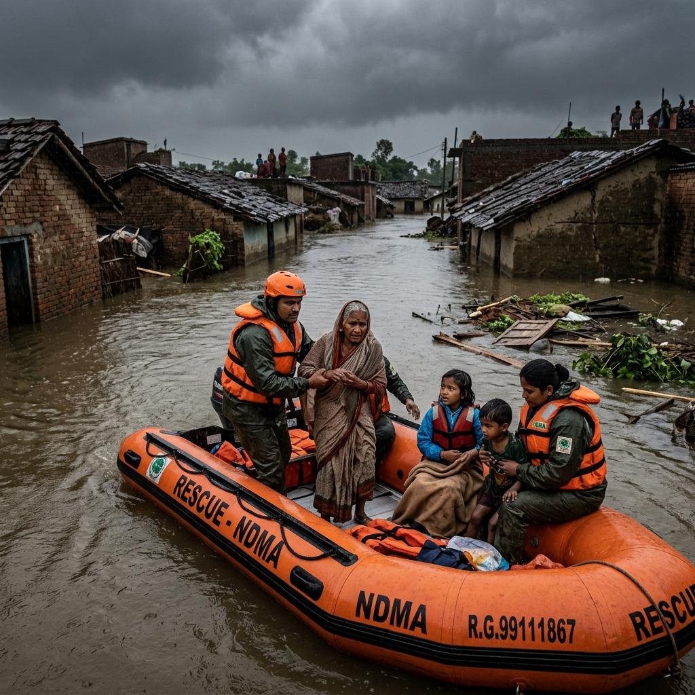

🔴 Critical — Act Now

📡 Live Updates
Assam Floods: 2,400 Families Stranded Without Clean Water
Monsoon floods have submerged 18 villages. Families survive on rooftops. Clean water, dry food, and hygiene kits are urgently needed right now.
Clean water for 2,400 families
Emergency food packs — 5,000 needed
Hygiene kits — 1,200 needed
₹12,40,000 raised
Goal: ₹20,00,000
✅ Verified NGO
📊 Audited
📍 GPS Tracked